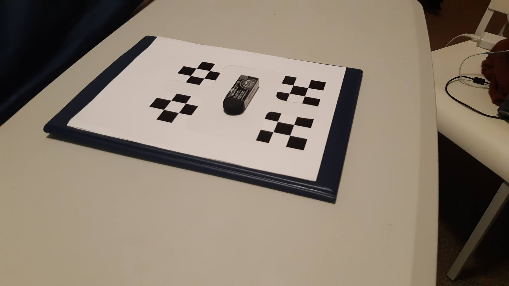
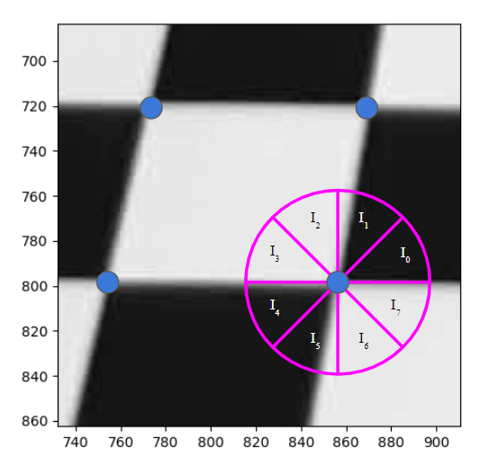
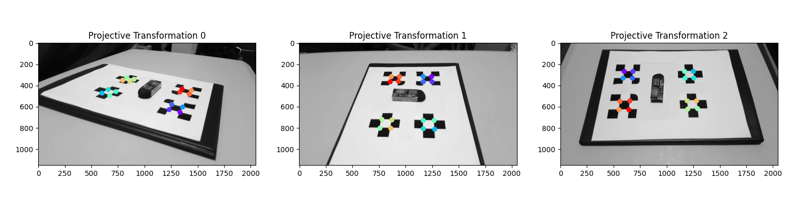
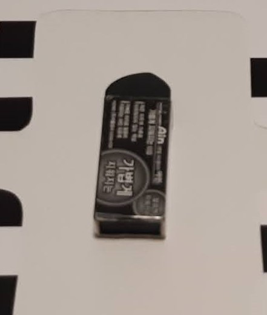
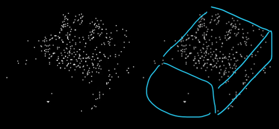

To learn more about and explore classical image processing techniques, I worked on a project to generate a 3D point cloud of an object from multiple images. I decided to use this project as the final project for one of my courses at UBC, and as a result wrote an IEEE style paper about it, which is embeded below. A summary of the work is given in this page, but for a full description of the developed algorithms, please refer to the attached paper.
Camera calibration refers to the process of finding the transformation between a 3D world point and the 2D image point. The intrinsic camera parameters (properties of the camera lens and image sensor) were found for my phone camera using the MATLAB Calibration Toolbox. The extrinsic parameters (position and orientation) must be calculated dynamically. For simplicity and due to time constraints, all object images were taken against a known background (shown in the image below), which was used to calculate the position and orientation of the camera.
As a first pass, candidates for the background's chess corners are found using a Harris corner detector. To reduce the large amount of false-corners detected, the candidates are passed through two filters: a centro-symmetry filter, and a distance threshold criterion. The centro-symmetry filter draws a circle with 8 sub-sections around the candidate. The filter then compares the average intensity in the sub-sections to eliminate candidates. This is visualized in the image below. The distance threshold criteria leverages the fact that corners exist as a 4-corner cluster, and eliminates any corner with a 3rd nearest neighbour that is too far
Once corners are found, they were sorted in a tranformation-invariant order. This sorting ensures that the exact same point in 3D space can be found across the different images. This sorting is demonstrated in the image below. Once the position of the corners was determined, the camera position and orientation were calculated using a nonlinear least squares optimization. Finally, the camera parameters were used to re-project the corners onto the image, and any images with high reprojection error were discarded.
To reconstruct a point in 3D, the point must be located across at least two images. Feature matching (the process of finding a common point between images of different perspectives) was done using the Scale-Invariant Feature Transform (SIFT). Once a feature is matched across two or more images, the 3D coordinates of the point were found by solving a homogeneous linear system made from the 2D image points and the projection matrix. Once again, these 3D points are re-projected to the images and discarded if the reprojection error is too high. Finally, the distribution of points across all 3 spatial coordinates is used to remove final outliers.
To visualize the 3D point cloud, I made an interactive 3D visualizer. The images below show two objects used for experiments, alongside a screenshot of their reconstructed point clouds in the visualizer.
 